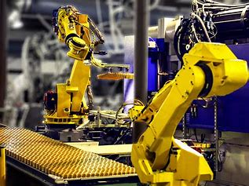

|
|
|  |
| Category | Description | Key Example |
| IndustrialRobots | Robots that automate industrial tasks like welding, assembling,and packaging. | Robotic Am |
| Humanoid Robots | Robots designed to mimic human behavior and interact with humans | Sophia |
| Autonomous Robots | Robots capable of performing tasks with little to no human intervention | Self-Driving Car |
| Exploratory Robots | Robots used in space exploration and deep-sea research. | Rover |